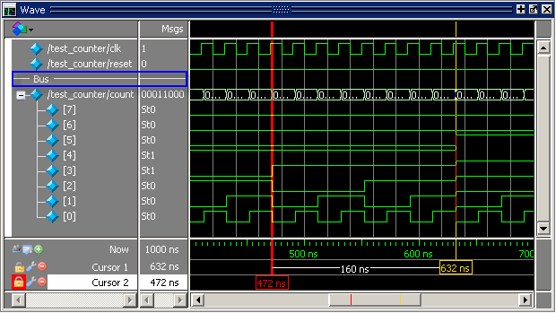

Dividers serve
as a visual aid for debugging, allowing you to separate signals
and waveforms for easier viewing. In the graphic below, a bus is
separated from the two signals above it with a divider called "Bus."
Figure 1. Separate Signals with Wave Window Dividers
The following procedure shows how to insert
a divider.
Procedure
- Select the signal above which
you want to place the divider.
- If the Wave pane is docked,
select Add > To Wave > Divider from the Main window menu bar. If
the Wave window stands alone, undocked from the Main window, select
Add > Divider from the Wave window menu bar.
- Specify the divider name in
the Wave Divider Properties dialog. The default name is New Divider.
Unnamed dividers are permitted. Simply delete "New Divider" in the
Divider Name field to create an unnamed divider.
- Specify the divider height
(default height is 17 pixels) and then click OK.
- You can also insert dividers
with the -divider argument
to the add wave command.